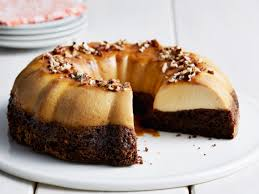

Receta de Chocoflan

Ingredientes:
- ¼ taza de cubierta de caramelo Smuckers® (de un bote de 347 gr./ 12.25-oz)
- 1 caja de harina para torta de chocolate
- 1 taza de agua
- ½ taza de aceite vegetal
- 3 huevos
- 1 lata (396 gr./ 14 oz) leche condensada (no evaporada)
- 1 taza de leche
- 4 huevos
Pasos a seguir:
- Calienta el horno a 175°C/ 350°F. Rocía con aceite en aerosol un molde de rosca para 12 tazas. Vierte y esparce la cubierta de caramelo en el fondo del molde.
- En un tazón grande, bate la harina del torta, agua, aceite y 3 huevos, con batidora eléctrica a velocidad media durante 2 minutos, limpiando el borde del tazón ocasionalmente. Vierte la masa en el molde, sobre la cubierta de caramelo.
- Coloca los ingredientes del flan en la batidora. Cúbrelo y bátelo a velocidad alta por 20 segundos o hasta que quede suave. Vierte la mezcla lenta y equitativamente sobre la masa. (la mezcla del flan se mezclará con la masa, pero se separarán durante el horneado, formando 1 capa de torta y 1 capa de flan. Rocía aceite en aerosol sobre un trozo de papel aluminio (del tamaño del molde) y tapa el molde con ese lado hacia abajo, cubriendo el molde y apretándolo bien.
- Coloca el molde del torta en una charola de horno y agrega 2 cm. / 1 inch de agua a la charola.
- Hornea durante 1 hora y 20 minutos para asegurarte de que el torta y el flan están completamente horneados (un palillo insertado en el centro del torta deberá salir limpio). Retira el molde del agua y colócalo sobre una rejilla de enfriamiento. Retírale el papel aluminio. Déjalo enfriar a temperatura ambiente por 1 hora. Refrigéralo en el molde, sin tapar, por 2 horas.
- Sácalo del refrigerador. Pasa una espátula de metal delgada por los bordes para zafar el torta. Coloca un platón de servicio boca abajo sobre el molde del torta y voltéalo. Retira el molde. Usa una cuchara para sacar del molde cualquier residuo de caramelo que haya quedado y viértelo sobre el torta. Guárdalo ligeramente tapado en el refrigerador.